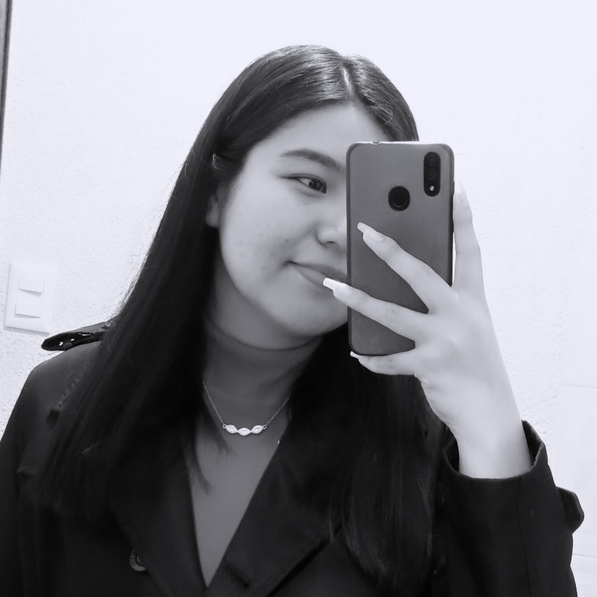

¿Quién soy?
Mi nombre es Ana Sofía Rojas Soto,tengo 22 años de edad y soy originario de Puebla. Actualmente estoy cursando el 8vo sementre de la carrera de Diseño Gráfico en BUAP, me gusta mucho tomar fotografías y dibujar. Me considero una persona tranquila y respetuosa con las personas que me rodean, soy una persona responsable y comprometida con lo que hago, me gustan los nuevos retos y crear nuevas ideas parar optimizar mis trabajos, además, soy capaz de resolver conflictos creativos es ámbitos digitales como: edición de videos, ilustración y fotografía.
De manera personal, me gustan mucho los animales, principalmente los perros, delfines y colibris, me gusta salir a convivir con mis amigos, aunque en ocasiones prefiero más estar en casa, me gustan las series y películas, en su mayoría de suspenso y acción , también me gusta mucho la Formula 1, de este deporte he aprendido a no rendirme y seguir adelante a hasta lograr cumplis mis objetivos.
Mi familia
Mi familia está compuesta por 4 miembros, además de mí.
Primero, está mi papá, José Rojas, es una persona alegre y siempre tiene una anécdota divertida que contar. Le gusta mucho el fútbol y bailar. Mi mamá, Agustina Soto, es muy buena en matemáticas, le gusta bailar y salir a caminar durante las mañanas. Siempre nos apoya en nuestras decisiones y nos ayuda a no darnos por vencidos.
Luego está mi hermano menor, Alejandro Rojas, que tiene 19 años y está en su primer año de universidad. Es un muy apasionado de las matemáticas y a menudo se pone retos personales para mejor sus habilidades en música y en sus destrezas mentales.
Por último, mi mascota, es un perro pequeño de raza criolla, tiene las orejas paradas y es color café, sin embargo, tiene su pecho blanco, le gusta jugar y hacer travesuras. En general, es un perro muy tranquilo, le gusta jugar con los niños, aunque por su edad solo los tolera un corto tiempo.
Materia favorita
Química
En esta materia hay muchos temas interesante, entre ellos, la identificación de compuestos químicos que son a través de notación en el uso de fórmulas químicas, que representan la composición y estructura de los compuestos. Algunas ejemplos son en las fórmulas químicas son:
Fórmula del agua
La fórmula H2O indica que el agua está compuesta por dos átomos de hidrógeno (H) y un átomo de oxígeno (O).Una de sus propiedades es que es un líquido a temperatura ambiente, y su estructura polar le otorga propiedades únicas, como la capacidad de disolver muchas sustancias.
Cloruro de socio
Está compuesto está formado por un ion sodio (NA+) y un ion cloruro (Cl-). Su propiedad es una sal que se encuentra en estado sólido a temperatura ambiente y se disuelve fácilmente en agua.